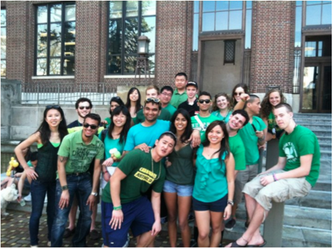
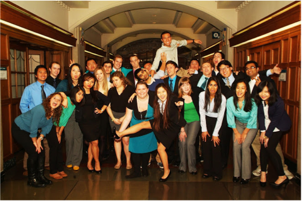

On January 10th, 2012, this co-ed professional fraternity was founded by a group of Informatics concentrators at the University of Michigan, Ann Arbor. The founders had a previously unmet desire to collaborate with a dynamic group of peers. Unlike most professional fraternities, Kappa Theta Pi aims to bring together students of all educational backgrounds. From business students to computer scientists, communications majors to young entrepreneurs, this fraternity bonds over the creation and implementations of the technologies that improve our lives. We are developing the leaders and the best of the future workplace. Whether it's forming a start-up, developing professional skills, or learning more about the world, Kappa Theta Pi offers a tight-knit community bringing together different ideas, outlooks, approaches, and knowledge. Kappa Theta Pi opens doors for those with a passion for technology.
E-board:
General Member List:
As an accepted member of Kappa Theta Pi, you will have access to a myriad of resources and opportunities to further your professional development and personal enjoyment. We offer exclusive recruiting sessions, resume building and critiquing, professional photography, start-up opportunities, leadership roles, great networking, and fun social activities with like-minded people.
With us, you can be at the forefront of creating a legacy.
Rush occurs at the beginning of both Fall & Winter Semesters.
Contact our Outreach Chairs for more information:
Patrick Riggs (riggspc@umich.edu)
Jeremy Wdowik is a BOSS (jjwdowik@umich.edu)
Committees:
Projects:
 
[Contact Info]